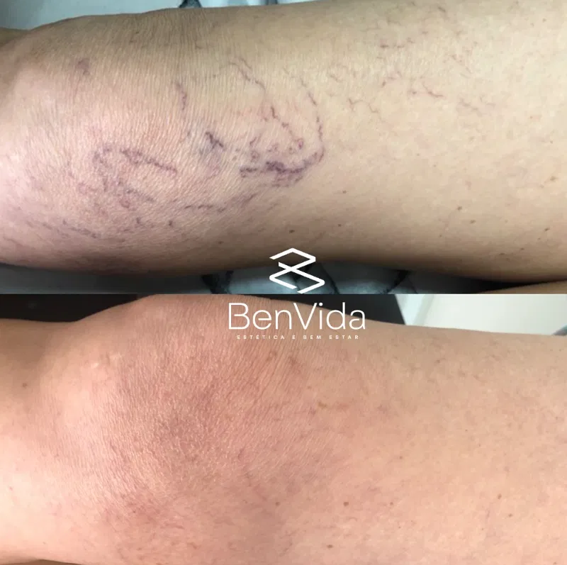

Aplicação de Microvasos
Trate os vasinhos que incomodam com segurança, técnica e acompanhamento profissional — em um ambiente acolhedor no coração do Grageru, em Aracaju.

O que são os microvasos e por que eles aparecem?
Os microvasos, popularmente conhecidos como "vasinhos", são pequenos vasos sanguíneos que ficam visíveis sob a pele, mais comuns nas pernas. Eles podem surgir por fatores genéticos, hormonais, tempo prolongado em pé ou sentado, exposição solar e outros hábitos do dia a dia.
O que são
Pequenos vasos sanguíneos superficiais que se tornam visíveis através da pele, sem necessariamente representar um problema de saúde.
Por que aparecem
Fatores genéticos, hormonais, rotina (tempo em pé ou sentado), exposição solar e o próprio processo natural do corpo.
Quando é indicado
Quando incomodam esteticamente e, principalmente, após uma avaliação profissional que confirme que o tratamento é adequado ao seu caso.
Como funciona o tratamento?
Cada sessão é conduzida com atenção aos detalhes, do primeiro contato até as orientações finais.
Avaliação inicial
Conversa e análise da região para entender o histórico e traçar o protocolo mais adequado ao seu caso.
Preparação da pele
Limpeza e preparo cuidadoso da área que será tratada antes do início da aplicação.
Aplicação
Técnica realizada por profissional especializado, sessão a sessão, com atenção ao conforto do paciente.
Orientações finais
Recomendações personalizadas de cuidados para potencializar e prolongar o resultado.
Benefícios da Aplicação de Microvasos
Melhora estética
Pele com aspecto mais uniforme, sem a presença visível dos vasinhos incômodos.
Minimamente invasivo
Procedimento que não exige cortes ou grandes intervenções na rotina do paciente.
Recuperação rápida
Na maioria dos casos, a rotina pode ser retomada logo após a sessão.
Mais autoestima
Sentir-se bem com a própria pele reflete diretamente na confiança do dia a dia.
✓ Indicações
- ✓ Pessoas incomodadas esteticamente com vasinhos visíveis nas pernas
- ✓ Pessoas saudáveis, sem contraindicações identificadas na avaliação
- ✓ Quem busca um procedimento pouco invasivo
- ✓ Pessoas que já passaram por uma avaliação profissional prévia
✕ Contraindicações
- ✕ Gestantes e lactantes
- ✕ Pessoas com condições vasculares que exijam acompanhamento médico específico
- ✕ Infecções ou lesões ativas na região a ser tratada
- ✕ Pessoas com condições de saúde ainda não avaliadas pela equipe
🕐 Cuidados antes da sessão
- ✓ Evitar exposição solar intensa na região nos dias anteriores
- ✓ Manter a pele hidratada
- ✓ Informar à equipe sobre medicações em uso
- ✓ Evitar bebidas alcoólicas na véspera
🌿 Cuidados após a sessão
- ✓ Evitar exposição solar direta na área tratada
- ✓ Usar protetor solar diariamente
- ✓ Evitar atividades físicas intensas nos primeiros dias, conforme orientação
- ✓ Seguir as recomendações passadas pela equipe da Benvida
Perguntas que recebemos com frequência
A maioria das pessoas relata apenas um leve desconforto durante a aplicação, geralmente bem tolerável. A equipe avalia sua sensibilidade antes de iniciar a sessão.
O número de sessões varia de acordo com a quantidade e o tipo de vasinhos identificados na avaliação. O protocolo é sempre definido de forma individual, após a análise presencial.
Normalmente, os vasos que foram tratados não voltam, mas podem surgir vasinhos na região próxima.
Sim, na maioria dos casos a rotina pode ser retomada no mesmo dia. A equipe passa orientações específicas de acordo com a área tratada e o seu tipo de pele.
Não é necessário repouso absoluto, mas recomenda-se evitar exposição solar direta na região tratada e seguir as orientações de cuidados pós-sessão repassadas pela equipe.
A sessão dura em torno de 30 a 50 minutos, dependendo da extensão da área tratada.
Como todo procedimento estético, existem particularidades que variam de pessoa para pessoa. Por isso, a avaliação prévia com a equipe da Benvida é fundamental para indicar o protocolo mais seguro para o seu caso.
Pronta para cuidar dos seus vasinhos com quem entende do assunto?
Fale agora com a equipe Benvida pelo WhatsApp e agende sua avaliação para Aplicação de Microvasos.
💬 Falar com a Benvida agora